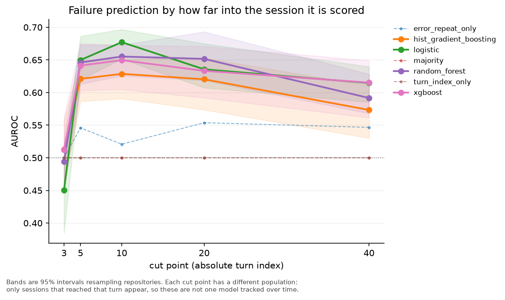
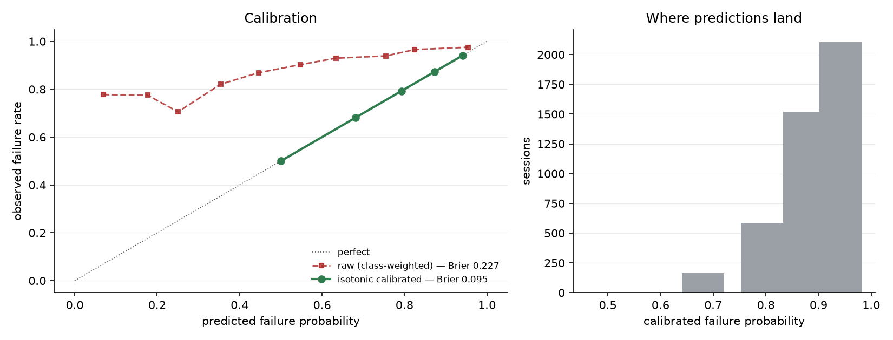
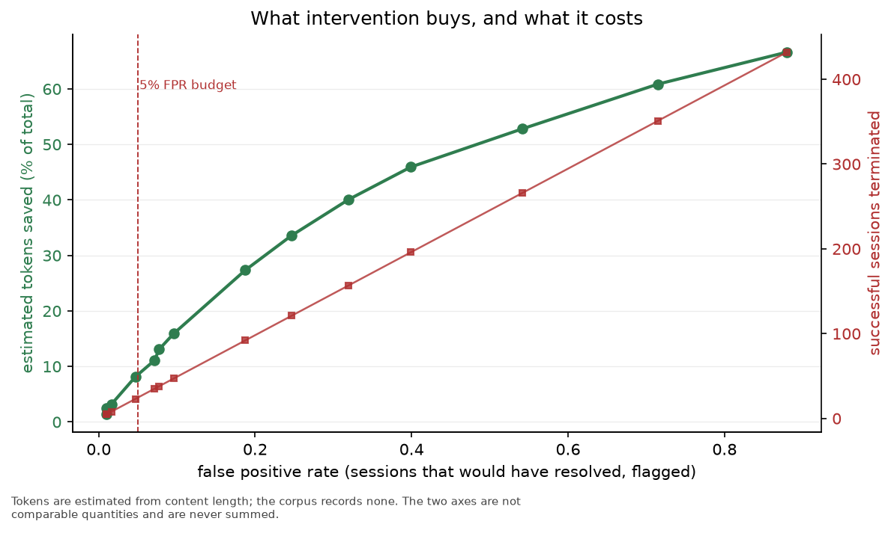

CPU-native failure prediction for AI coding agents
Can a lightweight, CPU-native model predict when a coding agent is heading toward failure early enough to save tokens — without killing sessions that would have recovered?
What this set out to test, and what it found.
A coding agent either resolves its task or it doesn't. A session heading nowhere keeps spending tokens that produce nothing, so detecting that early is worth doing — but stopping a session that would have recovered is worse than letting it run. That asymmetry is the whole problem: the value is in catching doomed sessions, the cost is in killing salvageable ones.
Fail-Fast, Restart-Smart (Wang et al., 2026) approaches this with a 0.6B neural monitor. Averta asks whether engineered trajectory features and a cheap classifier can do useful work at a fraction of that inference cost.
The pre-registered gate was not met, across two attempts judged against identical criteria. Four of five criteria passed; recall at a 5% false-positive budget reached 0.191 against a required 0.25.
What the work does establish: a 2.1 KB linear model at 0.18 ms CPU inference recovers roughly half the token savings reported for a 0.6B neural monitor. The cost reduction is large and the capability gap is real.
Every number on this page was measured before it was written. Criteria were committed to source control before any model existed, so they could not be relaxed to fit a disappointing result.
One corpus, because only one had labels.
Training data comes from SWE-Gym/OpenHands-Sampled-Trajectories. A survey of six public trajectory corpora found it to be the only one carrying both outcome classes — the others are supervised fine-tuning sets that store the agent's patch but never whether it worked.
Two properties shape everything downstream. The positive class is rare, so metrics that tolerate imbalance are required. And session length barely separates the classes: resolved sessions average 39.86 turns against 39.23 for unresolved. Prior work describes failing agent runs as tending to run longer; that does not reproduce here.
The source carries no declared license, so this project does not redistribute it. Raw trajectories are downloaded locally and excluded from version control; only derived statistics, figures and model artifacts are published.
Three constraints, each guarding against a specific way of fooling yourself.
A feature computed at turn t reads turns[0:t] and nothing else — never the total length, never the outcome. A test suite shuffles, truncates and extends the unseen tail and asserts the feature vector is byte-identical, and checks that features at turn 6 are the same whether the session runs to 12 turns or 200.
Evaluating at “40% through the session” requires knowing the total length, which is unavailable while a session is running. Evaluation uses turns 3, 5, 10, 20 and 40. Each cut has a different population — only sessions that reached that turn appear — and the resolve rate is reported per cut so the shift stays visible.
Every row from a repository lands in one fold. Rows sharing a codebase are not independent, so splitting by row would let a model memorise a repository and be rewarded for it. Confidence intervals resample repositories rather than rows for the same reason — row-level bootstrap reports intervals that are too narrow under clustering.
The positive class is failure, so the false positive rate means “sessions that would have resolved but were flagged” — the quantity worth constraining. Average precision is reported on the minority class instead, with its polarity named. Accuracy is never reported: at an 89% failure rate, always predicting failure scores 0.89 and is useless.
Turn 10 · 4,381 sessions · 88.8% failure rate · 5 repository-grouped folds · out-of-fold predictions pooled
| model | AUROC | 95% CI | AUPRC | R@5%FPR | Brier |
|---|---|---|---|---|---|
majority | 0.500 | [0.500, 0.500] | 0.127 | 0.000 | 0.2500 |
turn_index_only | 0.500 | [0.500, 0.500] | 0.127 | 0.000 | 0.2500 |
error_repeat_only | 0.521 | [0.484, 0.557] | 0.115 | 0.077 | 0.2489 |
logistic | 0.677 | [0.651, 0.697] | 0.198 | 0.191 | 0.2268 |
random_forest | 0.653 | [0.626, 0.669] | 0.186 | 0.161 | 0.1589 |
hist_gradient_boosting | 0.626 | [0.593, 0.646] | 0.168 | 0.162 | 0.1806 |
xgboost | 0.649 | [0.605, 0.672] | 0.187 | 0.154 | 0.1973 |
| pre-registered criterion | result |
|---|---|
| auroc >= 0.65 | pass |
| auroc ci lower >= 0.6 | pass |
| auprc >= 0.18 | pass |
| recall@5% fpr >= 0.25 | NOT MET |
| beats turn-index baseline | pass |
The shortfall is robust: it holds at every cut point tested and under any model-selection rule. The best recall at a 5% false-positive budget anywhere on the curve is 0.191.

Both reported. Identical criteria for each.
Attempt 1 used 23 aggregate counts over the prefix. AUROC 0.668, recall 0.155. Permutation importance showed one feature dominating — n_repeated_calls, a flat count of tool calls reissued with byte-identical arguments — while every error-based feature was negligible.
That pointed at ordering as the missing ingredient. A count knows an action recurred; it cannot express that the agent is cycling A-B-A-B, or how far back it reached to repeat itself.
Attempt 2 added 10 sequence-structure features. Recall rose from 0.155 to 0.191 and AUROC from 0.668 to 0.677 — real movement on exactly the failing criterion, but not enough to clear it.
| feature | attempt 1 | attempt 2 |
|---|---|---|
distinct_action_ratio | — | 0.159 |
novelty_rate_recent | — | 0.153 |
n_errors | 0.023 | 0.084 |
action_bigram_repeat_max | — | 0.078 |
n_repeated_calls | 0.198 | 0.030 |
n_repeated_calls collapsed once ordering was represented properly — it had been a proxy for structure it could not express. The two strongest features now both measure declining action novelty.
Modelling stopped after two attempts. The gains were real but shrinking, the mechanism is understood, and a third round of feature invention against a bar that had already failed twice would be threshold-shopping under another name.
The expectation was wrong, and measurement is what corrected it.
| feature | AUROC drop when shuffled |
|---|---|
distinct_action_ratio | 0.1590 |
novelty_rate_recent | 0.1529 |
n_errors | 0.0839 |
action_bigram_repeat_max | 0.0777 |
n_edits | 0.0704 |
chars_recent | 0.0381 |
max_call_repeat | 0.0363 |
chars_total | 0.0358 |
n_repeated_calls | 0.0303 |
action_trigram_repeat_max | 0.0301 |
The prior expectation was that a recurring error signature would dominate. It is close to worthless in isolation — AUROC 0.521 alone. Failure is predicted by declining action novelty: the share of actions that are distinct, and the share of recent actions never issued before. A session heading nowhere is one that has stopped trying new things, which is a different phenomenon from one that keeps hitting the same wall.
Single-row latency, because the monitor scores one live session per turn.
| model | p50 ms | p95 ms | size KB |
|---|---|---|---|
logistic | 0.180 | 0.187 | 2.1 |
random_forest | 26.601 | 37.378 | 11,310.7 |
hist_gradient_boosting | 11.587 | 19.186 | 524.1 |
xgboost | 0.181 | 0.221 | 489.5 |
The most accurate model is also the smallest and fastest by a wide margin. Plausible cause: with 33 features, 491 positives and repository-grouped evaluation, trees fit repository-specific thresholds that do not survive the group boundary.
A bug the plot caught, kept visible because the before-curve is the lesson.
Every model is fitted with class weighting, which is correct for ranking but leaves the output on a re-balanced scale. A raw score of 0.25 corresponded to an observed failure rate near 0.70. Rank-based metrics are unaffected — but any number shown to a person has to mean what it says.
Isotonic regression fitted on out-of-fold scores corrects it, moving the Brier score from 0.2323 to 0.0826. Fitting the calibrator on training predictions would have learned the model's own overconfidence and reported it back as calibrated.

What intervention buys, and what it costs.
| threshold | recall | FPR | est. tokens saved | successes killed |
|---|---|---|---|---|
| 0.55 | 0.502 | 0.246 | 33.6% | 121 |
| 0.60 | 0.423 | 0.187 | 27.2% | 92 |
| 0.65 | 0.283 | 0.096 | 15.8% | 47 |
| 0.70 | 0.241 | 0.077 | 13.1% | 38 |
| 0.75 | 0.219 | 0.069 | 11.0% | 34 |
| 0.80 | 0.183 | 0.047 | 8.4% | 23 |
| 0.85 | 0.061 | 0.018 | 3.1% | 9 |
| 0.90 | 0.050 | 0.010 | 2.4% | 5 |
| 0.95 | 0.023 | 0.010 | 1.0% | 5 |
At a comparable budget — 4.7% against the paper's 5% target — this reaches 8.1% estimated token savings where the 0.6B neural monitor reports 14.6–20.4%. Roughly half the value, at a fraction of the size.
Tokens are estimated from content length; the corpus records no token counts. Savings count only what would have been spent after the cut. Sessions wrongly terminated are never netted off the savings — the two are not commensurable and a single “net” figure would let the harm disappear into an aggregate.

Planned as an AUROC comparison. Not reported — the sample cannot support one.
The plan was to train on OpenHands trajectories and test on hand-labelled Claude Code sessions. Only 3 local sessions are long enough and none carry outcome labels, so a transfer AUROC would be noise presented as a result.
What is measurable without labels is whether the features compute comparably at all — a prerequisite for transfer rather than a substitute for measuring it.
| feature | corpus | local | std diff |
|---|---|---|---|
n_steps | 18.72 | 23.33 | +5.29 |
n_tool_calls | 18.84 | 10.00 | -4.40 |
turns_since_error | 9.30 | 40.00 | +2.74 |
n_distinct_errors | 2.96 | 0.00 | -1.83 |
error_rate | 0.23 | 0.00 | -1.77 |
n_errors | 4.21 | 0.00 | -1.71 |
Every comparable feature shifts by more than 1.3 standard deviations and some fall outside the training range entirely. Claude Code emits more assistant turns per tool call than OpenHands, because thinking blocks become their own turns — a “turn” is not the same unit across scaffolds. Cross-scaffold accuracy is therefore unmeasured, and the tool labels its output indicative in every code path.
This check caught a real bug. Two features reported exactly 0.00 on sessions full of edits, because edit detection was keyed to one tool vocabulary. Not a slightly worse score — a confident zero for something that happened dozens of times.
Stated plainly rather than buried.
Runs entirely locally. No API keys, no network at inference time, no session data leaves the machine.
git clone <repo> && cd averta
python3 -m venv .venv
.venv/bin/python -m pip install -e .
averta explain # analyse your most recent coding session
averta sessions # list local sessions
averta site # rebuild this pageThose work immediately — the trained model is committed. Reproducing the study needs the corpus, which is a 12-minute download:
averta ingest && averta features
averta train # cross-validate and apply the gate
averta diagnose # importance and inference cost
averta savings # savings against harm
averta figures # the plots on this pageaverta explain separates what is measured — recurring errors, reissued calls, clustered repetition, exact token counts — from what is estimated by a model that did not clear its gate. The measured half needs no model and is as reliable as the transcript. An MCP server exposes the same analysis to a coding agent over stdio.
macOS users need brew install libomp for xgboost. On Linux, libgomp1.